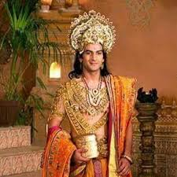
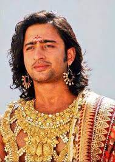

Home
Kauravas
Supporting_roles
Female_roles
Pandavas cast
Arun Rana
Pandu(125 episodes,2013-2014)

As a consequence of Kindama's curse, Pandu became incapable of fathering
any children. One day, Pandu was regaling the story of his birth and his
wish of becoming a father to his first wife, Kunti. Kunti told him about
the child-bearing mantra taught to her by the sage Durvasa. Pandu was
overjoyed and told Kunti to use it to gain sons from suitable
deities.[14] He wanted his son to be righteous, and so he suggested
Dharmaraja, the deity of death and righteousness. Kunti chanted her
mantra and the deity granted her Yudhishthira. Later, Pandu expressed
his desire for a powerful son. This time, Kunti invoked Vayu and Bhima
was born. Pandu suggested Kunti to invoke Indra and a valiant son,
Arjuna, was born. Pandu felt bad for Madri's childlessness, and thus
requested Kunti to share her mantra with her. Heeding his request, Kunti
revealed her mantra once to Pandu's younger wife. Madri invoked the
Ashvin twins, and then gave birth to Nakula and Sahadeva.[15]
Rohit Bharadwaj
Yudhisthira(267 episodes,2013-2014)

Yudhishthira (Sanskrit: युधिष्ठिर, IAST: Yudhiṣṭhira) also known as
Dharmaraja, was the king of Indraprastha and later the King of Kuru
Kingdom in the epic Mahabharata. He is the eldest among the five
Pandavas, and is also one of the central characters of the epic.[2]
Yudhishthira was the son of Kunti, the first wife of King Pandu,
fathered by the god Yama due to Pandu's inability to have children.
Yudhishthira held a belief in dharma (morals and virtues) and was chosen
to be the crown prince of Kuru. But after the Lakshagriha incident, he
was presumed to be dead and his cousin Duryodhana was appointed as the
new heir. The kingdom was split in half due to a succession dispute
between Yudhishthira and Duryodhana. Yudhishthira received the barren
half, which he later transformed into the magnificent city of
Indraprastha.[3] Yudhishthira and his brothers had a polyandrous
marriage with Draupadi, the princess of Panchala, who became the empress
of the Indraprastha. After Yudhishthira performed the Rajasuya Yagna, he
was invited to play a game of dice by his jealous cousin, Duryodhana and
his uncle, Shakuni. Shakuni, a master at the game, represented
Duryodhana against Yudhishthira and manipulated him into gambling his
kingdom, wealth, the freedom of his brothers, Draupadi, and even
himself. After the game, the Pandavas and Draupadi were sent into exile
for thirteen years, with the last year requiring them to go incognito.
During his exile, Yudhisthira was tested by his divine father Yama. For
the last year of the exile, Yudhishthira disguised himself as Kanka and
served the King of Matsya Kingdom.[4]
Saurav Gurjar
Bhima(267 episodes,2013-2014)

Bhima (Sanskrit: भीम, IAST: Bhīma), also known as Bhimasena (Sanskrit:
भीमसेन, IAST: Bhīmasena), is a divine hero and one of the most prominent
figures in the Indian epic Mahabharata, renowned for his incredible
strength, fierce loyalty, and key role in the epic’s narrative. As the
second of the five Pandava brothers, Bhima was born to Kunti—the wife of
King Pandu—through the blessings of Vayu, the wind god, which bestowed
upon him superhuman strength from birth. His rivalry with the Kauravas,
especially Duryodhana, defined much of his life, with this tension
ultimately erupting in the Kurukshetra War, where Bhima killed all
hundred Kaurava brothers.[1] Bhima’s life was filled with extraordinary
episodes that showcased his unmatched strength and bravery. From
childhood, where he was rescued by the Nagas (divine serpents) after
being poisoned, to his victories over formidable foes like Bakasura,
Hidimba, and Jarasandha, Bhima’s adventures are integral to the
Mahabharata’s storyline. His raw, earthy nature is reflected in the
brutal slaying of his enemies, his immense appetite and his marriage
with Hidimbi, a rakshasi (a supernatural being known to consume humans),
who bore him a son, Ghatotkacha, a powerful warrior who would later play
a significant role in the Kurukshetra War.[1]
Shaheer Sheikh
Arjuna(267 episodes,2013-2014)

Arjuna (Sanskrit: अर्जुन, IAST: Arjuna) was an ancient prince of the
Kuru Kingdom, located in the present-day India. He is one of the main
protagonists of the Hindu epic Mahābhārata. He was the third of five
Pandava brothers, from the lineage of the Kuru. In the Mahabharata War,
Arjuna was a key warrior from the Pandava side in the battle of
Kurukshetra. Before the beginning of the war, his mentor Krishna gave
him the supreme knowledge of the Bhagavad Gita to overcome his moral
dilemmas. In the epic, Arjuna is the closest friend and companion of
Krishna.[1] Arjuna was the son of Kunti, the wife of Kuru King Pandu,
and the god Indra, who fathered him due to Pandu's curse. In the
Mahabharata, Arjuna is depicted as a skilled archer from an early age,
as a student who earns the favour of his preceptor Drona, as the rival
of Karna, as the primary adversary of Kauravas, and the betrothed of
Draupadi, who became the common wife of the Pandavas. Arjuna is twice
exiled, first for breaking a pact with his brothers, and again with his
brothers after his eldest brother is tricked into gambling away the
throne. During his first exile, Arjuna married Ulupi, Chitrāngadā and
Subhadra. From his four wives, Arjuna had four sons, one from each
wife—Shrutakarma, Iravan, Babhruvahana and Abhimanyu. During his second
exile, Arjuna gained many celestial weapons. Apart from being a warrior,
Arjuna possessed skills in music and dance. At the end of the epic the
Pandavas, accompanied by Draupadi, retire to the Himalayas, where
everyone in time passes away to arrive in heaven.
Vinay Rana
Nakula(267 episodes,2013-2014)

Nakula (Sanskrit: नकुल) was the fourth of the five Pandava brothers in
the ancient Indian epic, the Mahabharata. He and his twin brother
Sahadeva were the sons of Madri, one of the wives of the Pandava
patriarch Pandu, and Ashvini Kumaras, the divine twin physicians of the
gods, whom she invoked to beget her sons due to Pandu's inability to
progenate. Nakula is described as the most handsome man of his lineage,
and was renowned for his beauty, skill in swordsmanship and horse
keeping. He shared the common wife, Draupadi, with his four brothers. He
was also married to Karenumati of Chedi Kingdom. He had two sons
Shatanika and Niramitra from his two wives respectively. During the
Rajasuya of his eldest brother Yudhishthira, he conquered the kings of
the Sivis, the Rohitakas and other dynasties. After Yudhishthira lost
all his possessions to his cousin Duryodhana in a dice game, the
Pandavas and Draupadi were exiled for thirteen years. During the
Pandavas' year of incognito exile, he disguised as a horse trainer named
Granthika, and worked in the kingdom of Virata. Nakula was a skilled
warrior who fought in the Kurukshetra War between the Pandavas and their
cousins Kauravas. After the war, Yudhishthira appointed Nakula as the
king of northern Madra. At the end of the epic, during the Pandavas'
journey to the Himalayas to enter heaven, Nakula was the third to fall,
following Draupadi and Sahadeva, due to his excessive pride in his
beauty.
Lavanya Bhardwaj
Sahadeva(267 episodes,2013-2014)

Sahadeva (Sanskrit: सहदेव, romanized: Sahadeva, lit. 'one with the
gods') was the youngest of the five Pandava brothers in the ancient
Indian epic, the Mahabharata. He and his twin brother Nakula were the
sons of Madri, one of the wives of the Pandava patriarch Pandu, and
Ashvini Kumaras, the divine twin physicians of the gods, whom she
invoked to beget her sons due to Pandu's inability to progenate. Kunti,
Sahadeva's step-mother, loved him the most despite his birth to Madri.
Sahadeva is renowned for his wisdom, knowledge of astrology, and skill
in swordsmanship. Sahadeva shared the common wife, Draupadi, with his
four brothers. He was also married to Vijaya of Madra kingdom. He had
two sons, Shrutasena and Suhotra, from his two wives respectively.
Sahadeva played a crucial role during the Rajasuya of Yudhishthira,
where he conquered the kings of the South. After Yudhishthira lost all
of his possessions to Duryodhana in the game of dice, Sahadeva vowed to
slay Shakuni, Duryodhana's maternal uncle, who had used loaded dice to
unfairly win the game. Afterwards, the Pandavas and Draupadi were exiled
for thirteen years, with the last year being a period of hiding. During
the hiding, Sahadeva disguised himself as a Vaishya named Tantripala and
worked as a cowherd in the kingdom of Virata. Sahadeva was a skilled
warrior who fought in the Kurukshetra War between the Pandavas and their
cousins, the Kauravas. On the 18th day of the war, he slayed Shakuni. At
the end of the epic, during the Pandavas' journey in the Himalayas to
enter svarga (heaven), Sahadeva was the second to fall, following
Draupadi, due to his excessive pride in his wisdom.